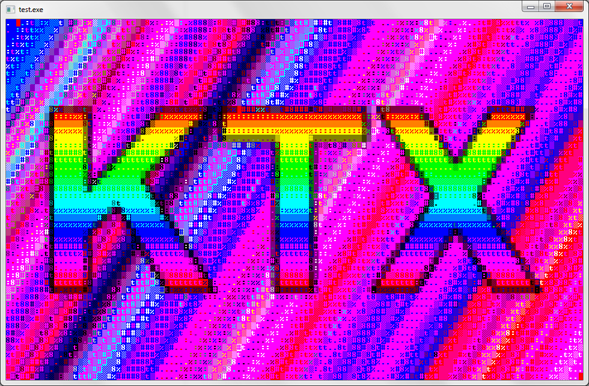

KTX
| KTX | |
|---|---|
|  | |
| Результат выполнения | |
| Разработка | |
| Статус | Поддерживается |
| Разработка | Поддержка с 2018 |
| Написан на | PascalABC.NET |
| Платформы | Windows |
| Статистика | |
| Строк кода | .pas: 2391 |
KTX — это менеджер консольной оболочки. Ныне используется только для конвертации изображений в картинки из консольных символов, так как в плане всех остальных возможностей многократно уступает KTXCore, на котором написана Biker 3.
Также существует программа KTXRunner с помощью которой возможно вывести любую картинку консольными символами. В ней также можно попробовать все конвертации, которые были в KTX в течение его разработки!
Список использующихся версий
| Версия | Использование | Реализация |
|---|---|---|
| KTX 1.2 | Biker 2 | Статический класс |
| KTX 2.3 | — | Модуль PascalABC.NET |
| KTXRunner | Утилита | Консольное приложение |